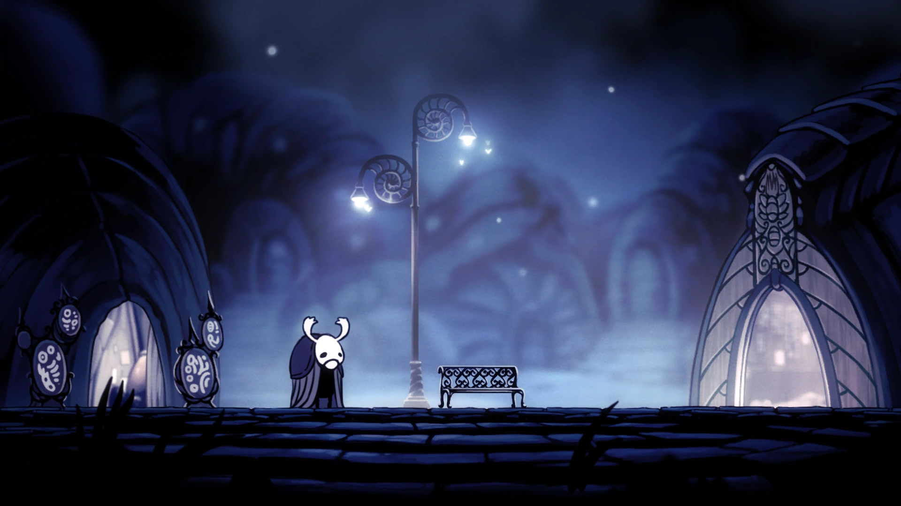
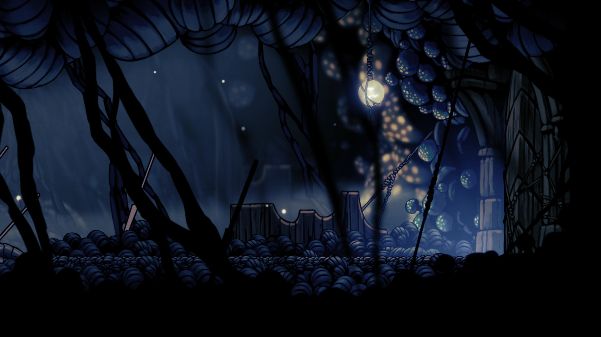

- Dirtmouth

- Greenpath

- City of Tears

- Deepnest

- Crystal Peak
- Resting Grounds

- Fungal Wastes

- Royal Waterways

- Ancient Basin
- Queens Gardens

- Forgotten Crossroads

- Kingdom's Edge
- Fog Canyon

- Howling Cliffs

- The Abyss

Hallownest é um reino vasto e interligado, formado por diversos lugares únicos, cada um com sua própria atmosfera e história. A jornada começa em Dirtmouth, uma vila simples e silenciosa na superfície. Descendo mais fundo, encontramos áreas como Greenpath, cheia de vida e natureza, e a City of Tears, uma cidade antiga marcada pela chuva constante e pela decadência. Outras regiões, como Deepnest, são escuras e perigosas, cheias de criaturas assustadoras, enquanto locais como Crystal Peak e Resting Grounds revelam mais sobre o passado e os mistérios do reino. Cada área de Hallownest contribui para construir um mundo rico, cheio de segredos, desafios e histórias escondidas.

